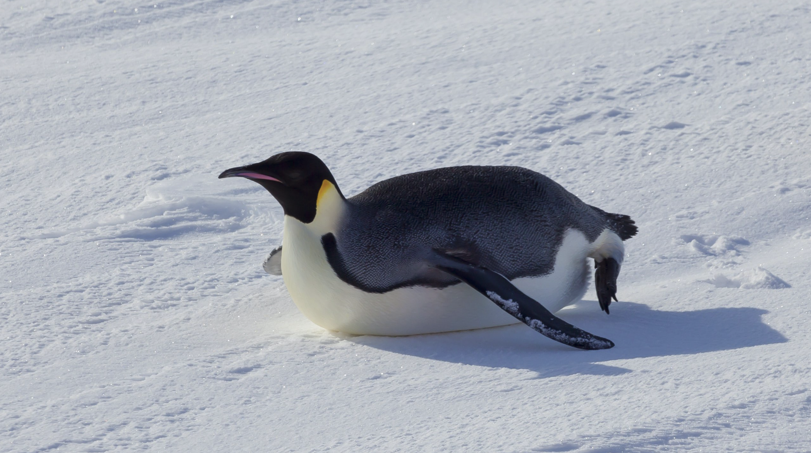

©2025 Yujin Shin. All Rights Reserved.
Designed by Yujin Shin / Kaywon University

1. 극한의 추위 속 협동, 허들링 (Huddling)
남극의 겨울은 영하 50°C 이하로 떨어집니다. 황제펭귄은 이 추위를 견디기 위해 수천 마리가 밀집된 집단 '허들'을 만듭니다. 이 허들 안의 온도는 바깥보다 10~20°C 높아집니다.
바깥쪽의 펭귄은 일정 시간 간격으로 안쪽으로 이동하고, 안쪽의 펭귄은 다시 바깥쪽으로 순환하는 정교한 시스템을 통해 모든 개체가 균등하게 열을 공유합니다.

2. 미끄러지며 이동하기, 토보개닝 (Tobogganing)
황제펭귄은 수 마일의 거리를 이동해야 할 때, 똑바로 걷는 대신 배를 깔고 얼음 위를 미끄러지며 이동합니다. 이 방식을 토보개닝(썰매 타기)이라고 합니다.
토보개닝은 걷는 것보다 약 20~30%의 에너지를 절약할 수 있으며, 더 빠르게 이동할 수 있게 해줍니다. 이는 먹이를 구하러 갈 때 체력을 효율적으로 관리하는 중요한 생존 전략입니다.
3. 마찰력을 이기는 '버블 제트' 잠수
물속에서 지상으로 고속 상승할 때, 황제펭귄은 깃털에 갇혀있던 공기를 미세한 기포(버블) 형태로 방출합니다.
이 기포들은 깃털과 물 사이의 마찰력을 획기적으로 줄여주어, 잠수 후 **최대 2~3배** 더 빠른 속도로 수면 위로 솟아오르게 합니다. 이는 천적의 위협을 피하는 동시에 먹이를 잡은 후 빠르게 호흡하기 위한 생체 기술입니다.